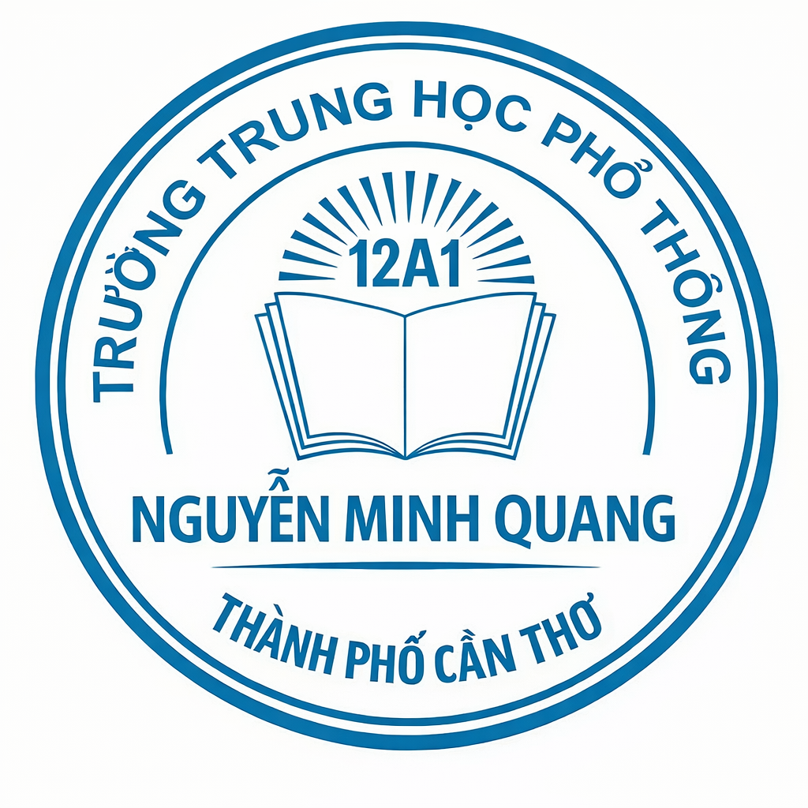
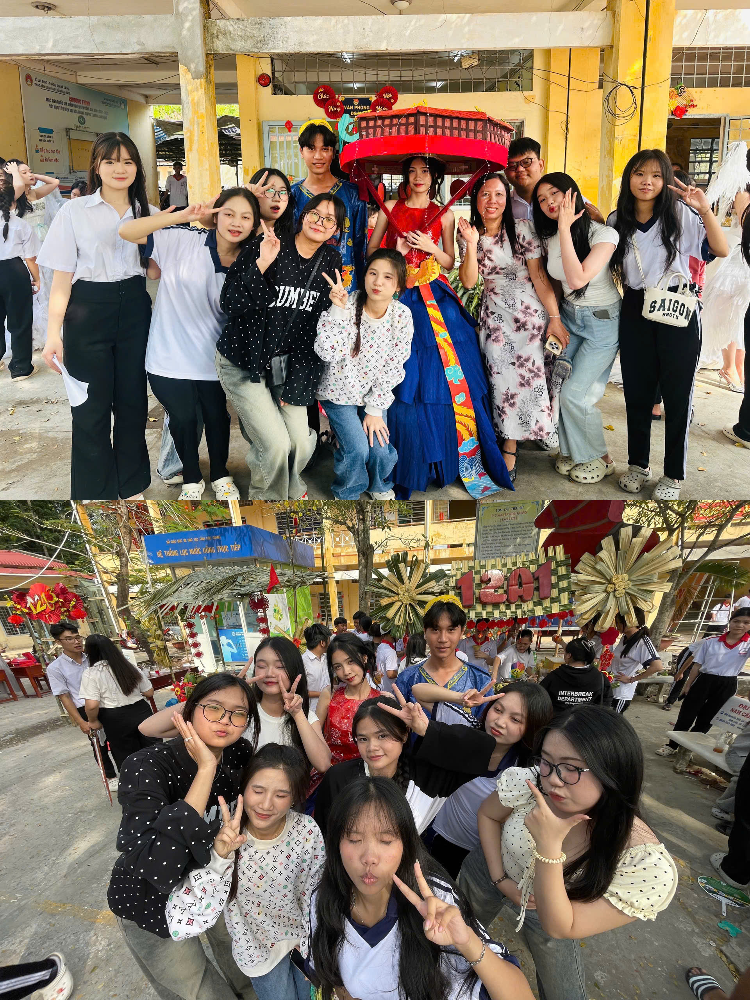
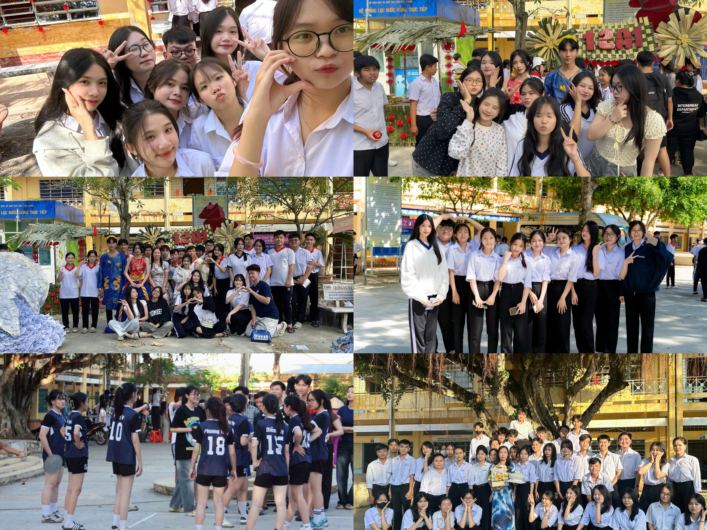

"Tuổi trẻ luôn là quãng thời gian mà con người ta phải ngoái đầu nhìn lại
với ánh mắt tiếc thương, rồi thở dài bất lực thay cho câu nói “đã từng như vậy"."
Thời gian trôi qua thật nhanh, mới ngày nào chúng ta còn bỡ ngỡ bước vào mái trường thân quen, vậy mà giờ đây những kỉ niệm đã dần trở thành hành trang quý giá của tuổi học trò. Những giờ học, những tiếng cười, những lần cùng nhau cố gắng vượt qua khó khăn đã tạo nên một quãng thời gian thật đẹp và đáng nhớ. Báo tường này được thực hiện như một góc nhỏ lưu giữ những kỉ niệm ấy – nơi chúng ta cùng nhìn lại chặng đường đã qua, trân trọng tình bạn, tình thầy trò và những khoảnh khắc không thể nào quên dưới mái trường thân yêu.
...
"Thanh xuân" có lẽ chính là quãng thời gian tươi đẹp nhất, rực rỡ nhất đầy khát khao, hoài bão của những đứa trẻ đầy nhiệt huyết dám sống hết mình, dám vấp ngã để có thể trưởng thành . Những đứa trẻ ở tuổi 17 với những ước mơ lớn lao cho tương lai cũng có những lo sợ cho mai này sợ rằng chẳng thể vui đùa cùng bạn bè, trò chuyện cùng thầy cô ,chẳng còn những cuộc gặp không hẹn trước, sợ khi đã rời xa mái trường phải chạy theo sự hối hả của cuộc sống, mỗi đứa một con đường riêng, quên mất những năm tháng vô tư hồn nhiên như bây giờ. "Có những cơn mưa chỉ đổ xuống duy nhất một lần" đó là cơn mưa ở tuổi 17 và cuộc sống chúng ta đang sống cũng chính là ngày tháng mà sau này ta ước cũng chẳng thể quay lại. Có những người dù không cùng máu mủ, nhưng lại khiến ta biết ơn vì đã gặp và đã góp mặt vào phần nào đó của thanh xuân chúng ta. Để lại những kí ức, những kỉ niệm đáng để trân trọng.
...
Có những khoảnh khắc trong tuổi học trò tưởng chừng rất bình thường: một giờ ra chơi rộn ràng, một lần cùng nhau làm bài tập hay một tiếng cười vang cả lớp. Nhưng khi thời gian trôi qua, những điều giản dị ấy lại trở thành kỉ niệm đẹp nhất. Khoảnh khắc nhỏ bé hôm nay có thể sẽ là điều chúng ta nhớ nhất mai sau.
...

